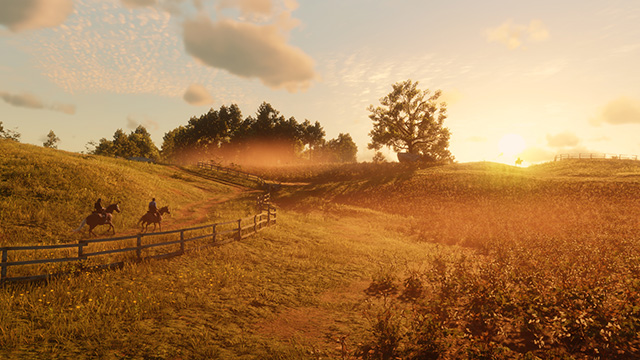
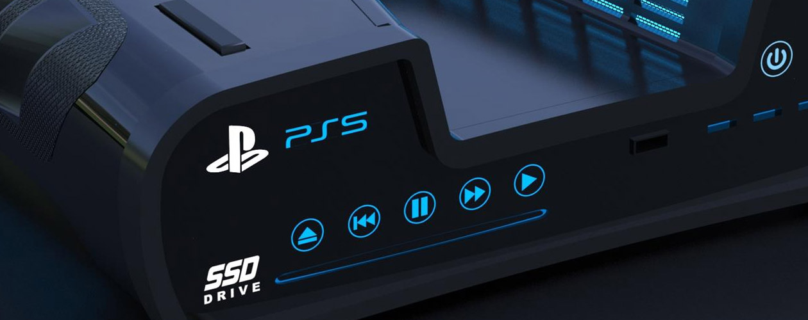

News
A collection of video game news from around the industry.
Summarised into snippets by members of our team.
Read Dead Redemption 2 PC
Read Dead Redemption 2 finally announced for PC
Red Dead Redemption 2 is coming to PC on November 5. The news was announced via a tweet from developers Rockstar, which also revealed some of the new features that will be coming when the PC version finally launches.
Red Dead Online, the game's online multiplayer component, is also making its way to PC, bang up to date with the latest content "including Frontier Pursuits and the specialist Roles of Bounty Hunter, Trader and Collector for players to progress through and earn unique rewards."
For more info check out Rockstar's announcement.
PlayStation 5 Confirmed
PlayStation 5 set to release in 2020
Sony representatives have revealed substantial new details about the company's upcoming PlayStation 5 console in an interview with Wired. New features and improvements will include sophisticated haptics in the controller, hardware ray tracing, and a UI that lets users see in-game information before launching a game. Additionally, Sony confirmed that the console will be called the PlayStation 5 and that it will launch before the holidays in 2020.
Mark Cerny, the architect of the PlayStation 4, has returned as chief architect for the PlayStation 5. Earlier this year, he sat down with Wired to demonstrate Sony's work to eliminate load times with extremely fast solid-state drives and improved software stacks and I/O to accompany them. In that demonstration, a fast-travel load in Spider-Man went from 19 seconds on current PS4 hardware to less than one second on new hardware.
Check out Wired's interview for more details.
Google Stadia
Stadia to be "faster" than local gaming hardware
Google Stadia will be faster and more responsive than local gaming systems in “a year or two,” according to VP of engineering Madj Bakar. Thanks to some precog trickery, Google believes its streaming system will be faster than the gaming systems of the near-future, no matter how powerful they may become. But if the system is playing itself, does that really count?
Speaking with Alex Wiltshire in Edge magazine #338, Google’s top streaming engineer claims the company is verging on gaming superiority with its cloud streaming service, Stadia, thanks to the advancements it’s making in modelling and machine learning. It’s even eyeing up the gaming performance crown in just a couple of years.
“Ultimately, we think in a year or two we’ll have games that are running faster and feel more responsive in the cloud than they do locally,” Bakar says to Edge, “regardless of how powerful the local machine is.”
Learn more at PCGamesN.